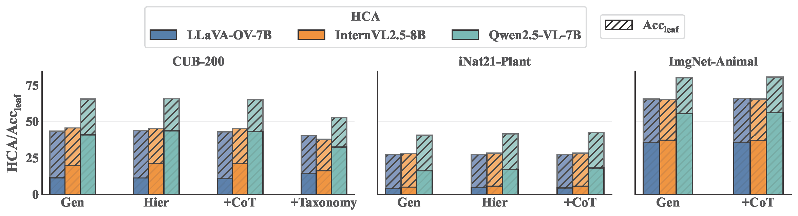

Abstract
This paper reveals that many state-of-the-art large language models (LLMs) lack hierarchical knowledge about our visual world, unaware of even well-established biology taxonomies. This shortcoming makes LLMs a bottleneck for vision LLMs' hierarchical visual understanding (e.g., recognizing Anemone Fish but not Vertebrate). We arrive at these findings using about one million four-choice visual question answering (VQA) tasks constructed from six taxonomies and four image datasets. Interestingly, finetuning a vision LLM using our VQA tasks reaffirms LLMs' bottleneck effect to some extent because the VQA tasks improve the LLM's hierarchical consistency more than the vision LLM's. We conjecture that one cannot make vision LLMs understand visual concepts fully hierarchical until LLMs possess corresponding taxonomy knowledge.
Hierarchical Visual Understanding
This work systematically evaluates the hierarchical visual understanding capabilities of vision-language models (VLLMs) using six taxonomies (iNat21-Animal, iNat21-Plant, ImageNet-Animal, ImageNet-Artifact, CUB-200, Food101) and four hierarchical image classification datasets (iNat21, ImageNet, CUB-200, Food101). Unlike flat classification, which treats labels as mutually exclusive and unstructured, hierarchical image classification categorizes visual inputs into semantically structured categories across multiple levels of specificity. We construct approximately one million four-choice visual question-answering (VQA) tasks from the hierarchical datasets. Each task spans all taxonomy levels, with the four answer choices drawn from the same level. To evaluate model performance, we emphasize hierarchical consistency, a property unique to hierarchical visual understanding and essential for adapting to users' varying preferences for granularity.
Our Main Findings
- Many state-of-the-art VLLMs struggle with our hierarchical VQA tasks, showing a substantial lack of hierarchical consistency. For example, Qwen2.5-VL-72B makes errors on over 67% of the hierarchical paths in the iNaturalist taxonomy.
- The LLM component is the primary bottleneck, lacking taxonomy knowledge of the visual world.
- In contrast, the visual encoder and projector retain highly discriminative and well-structured visual features.
- LLM embeddings capture sufficient hierarchical cues and organize visual concepts orthogonally, but the model fails to decode them properly.
- Finetuning a VLLM on our VQA tasks improves the LLM's text-based hierarchical consistency more than its visual hierarchical consistency, reaffirming the LLM bottleneck.
Vision LLMs Are Bad at Hierarchical Visual Understanding
-
Vision LLMs are bad across a range of taxonomies on hierarchical consistent accuracy (HCA) even when leaf-level accuracy (Accleaf) is high.
-
Some error examples.
.png)
Why Are VLLMs Poor at Hierarchical Image Classification?
We systematically explore why VLLMs perform poorly on hierarchical visual understanding tasks from prompt sensitivity, visual representations, text representations and the geometry of hierarchical representations in VLLMs.
Language Prompts Are Not the Bottleneck
We first extensively study prompt variations and reveal that some prompts can lead to marginally better results than the rest, but the results remain generally bad.
Prompt variants and their effects on VLLMs' hierarchical consistency (HCA) and fine- grained recognition accuracy (Accleaf) (Gen: general prompts, Hier: hierarchical prompts, +CoT: prompts with Chain-of-Thought reasoning, +Taxonomy: prompts that include an explicit taxonomy in the JSON format.)
Visual Embeddings Are Not the Bottleneck
We then examine VLLMs' visual encoders and subsequent visual tokens to see whether and where essential visual information is lost when it forwards through VLLMs. Interestingly, the discriminative cues in the visual tokens are maintained across various stages of the VLLM architectures, leading to about the same hierarchical image classification results immediately after the visual encoder, after the projection to the language token space, and at the very last layer of an LLM.
LLMs Are the Bottleneck in VLLMs' Hierarchical Visual Understanding
Open-Source VLLMs' LLMs Lack Taxonomy Knowledge
Surprisingly, we find that the generally believed powerful LLMs, even the one with 72B parameters in our experiments, lack basic taxonomy knowledge and are likely responsible for VLLMs' poor performance on hierarchical visual understanding.
(Text) HCA of VLLMs' LLMs and its correlation ρ with VLLMs' (visual) HCA. The results show that the LLMs' HCA is generally bad across all taxonomies, and the correlation ρ between text and visual HCA can be as high as 0.9116.
Vision-Language Tuning Is Not the Reason
We present an extended comparison between vision-tuned LLMs and their original counterparts for all 7B/8B open-source VLLMs. As shown, with the exception of LLaVA-OV-7B, all other models exhibit improved performance in their vision-tuned versions on at least 3 out of the 5 benchmarks.
LLMs Encode Hierarchical Structures Effectively but Cannot Decode Them Sufficiently
We use three different types of prompts to probe the text features of VLLMs' LLMs and find that the LLMs are capable of encoding hierarchical structures but fail to decode them properly. In other words, the specialized linear probes can decode the taxonomy knowledge significantly better than the general-purpose LLM.
LLMs Gain More Hierarchical Consistency than VLLMs from Finetuning
Finetuning on hierarchical VQA tasks improves VLLMs' hierarchical consistency on visual inputs while preserving their performance on general VQA tasks. Intriguingly, the finetuning benefits the LLMs (text) hierarchical consistency more than the corresponding VLLMMs (visual) hierarchical measure. To some extent, this finding reaffirms that LLMs are the bottleneck of VLLMs' hierarchical visual understanding, and one has to improve LLMs' (text) taxonomy knowledge to boost VLLMs' (visual) hierarchical consistency.
(Visual) HCA and Accleaf of Qwen2.5-VL-7B before and after the LoRA-finetuning.
(Text) HCA of the LLM of Qwen2.5-VL-7B before and after the LoRA-finetuning.
BibTeX
Add after arXiv